01
Part 1 · theHarvester & dnsenum
I started with three theHarvester runs and got nothing useful back—empty IP/email/host
counts, plus API-key and source errors on a broader -b all pass.
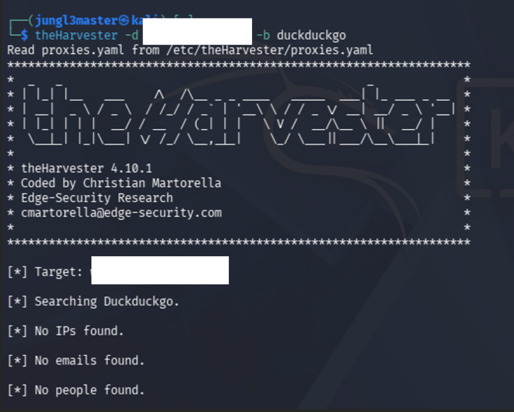
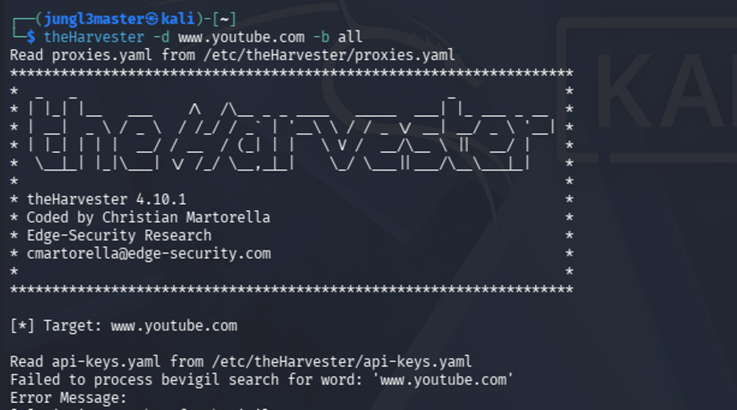
-b all against YouTube hit source
failures.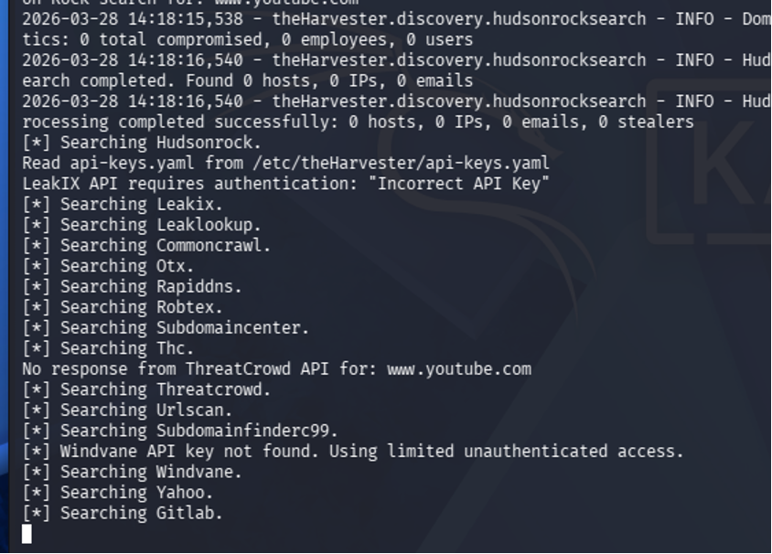
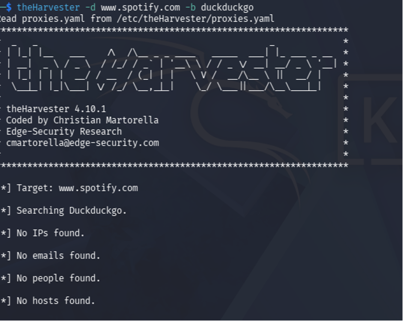
dnsenum was more productive. Against YouTube I got A records, Google name servers, and MX
addresses. A second run against a university hostname returned host addresses (Cloudflare)
but stopped when no NS record existed for the www label.
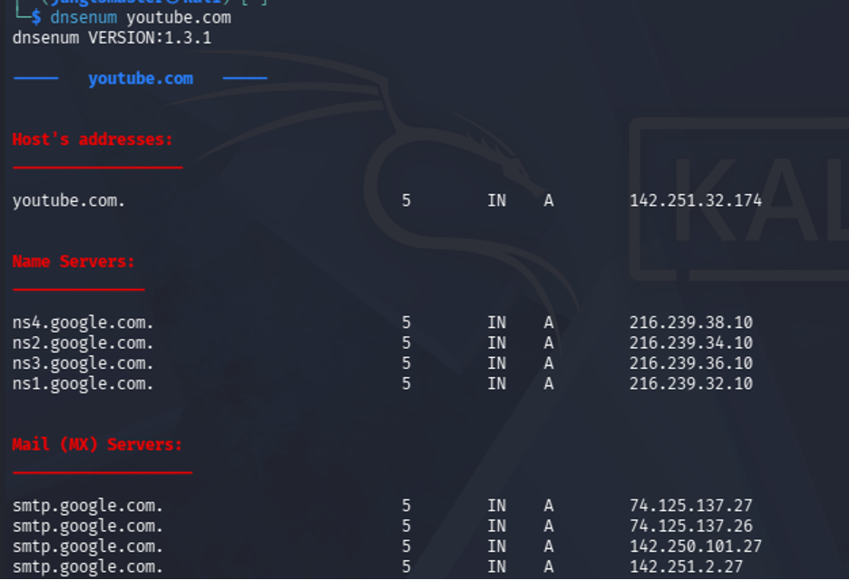
youtube.com—A, NS, and MX
output.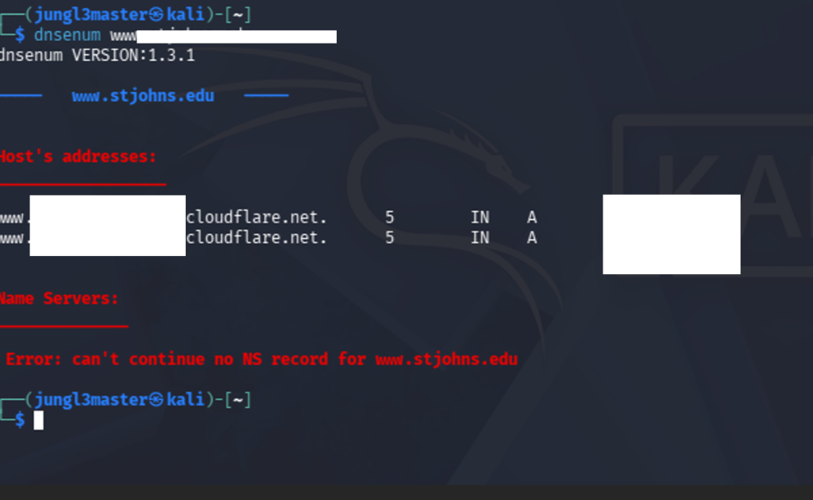
www target: addresses found, then
“no NS record” halt.02
Part 2 · Local Hosts Redirect
In the Windows 10 VM I resolved both sites first: www.wku.edu mapped to
161.6.96.74 (ICMP timed out), and www.ivytech.edu answered from
its real CDN address before any hosts change.
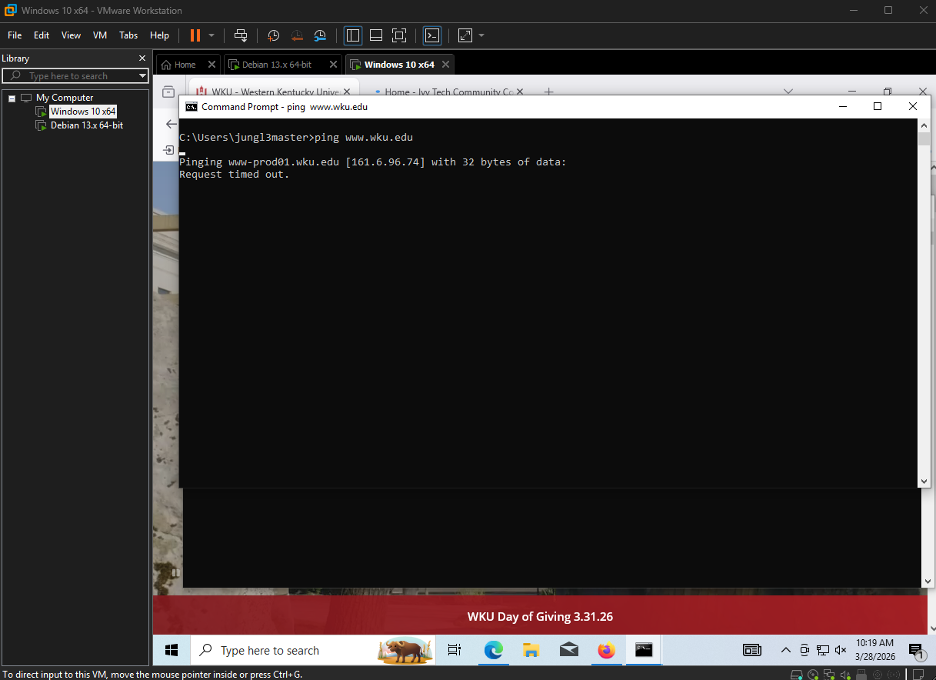
161.6.96.74.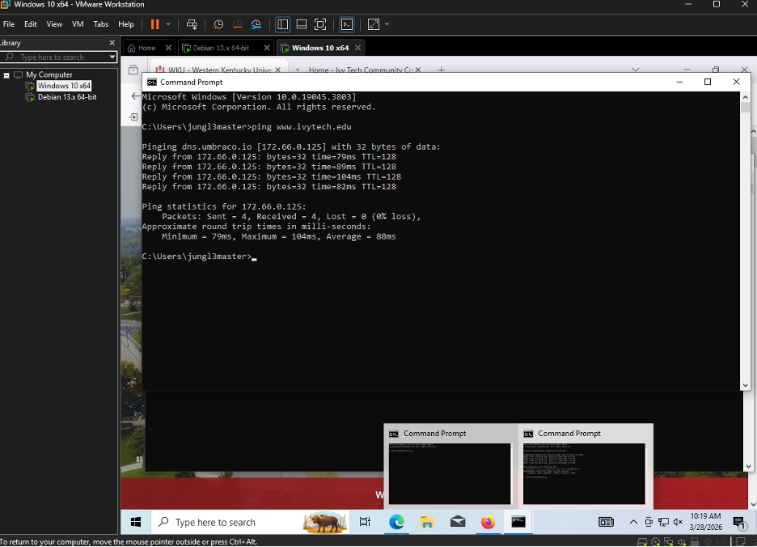
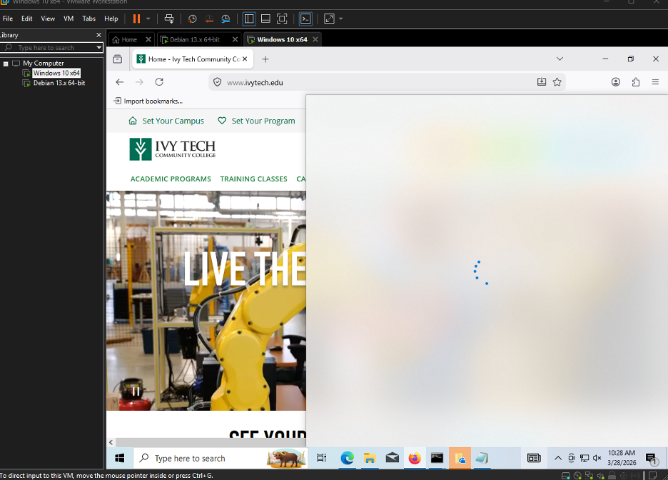
I opened the system hosts file in Notepad as Administrator and added
161.6.96.74 mapped to www.ivytech.edu.
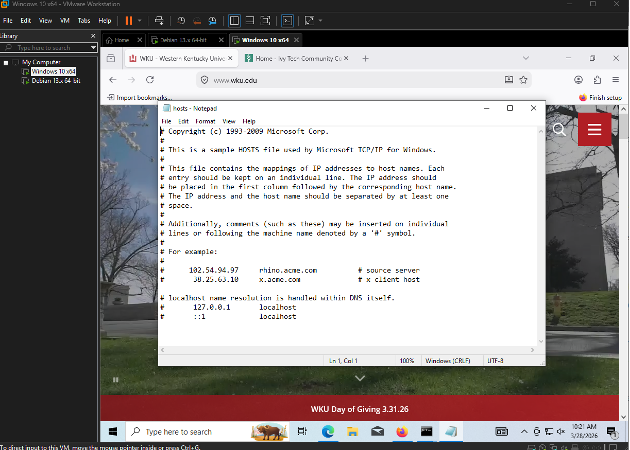
hosts as Administrator.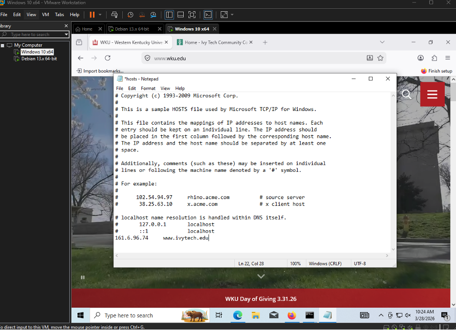
At first the redirect did not stick. I flushed the resolver cache, turned Firefox DNS over
HTTPS off so the browser would honor the system resolver, and retested in a private
window. After that, navigating to www.ivytech.edu served the WKU site content
from the overridden address.
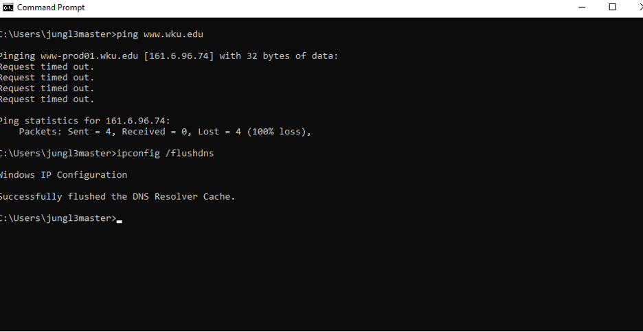
ipconfig /flushdns.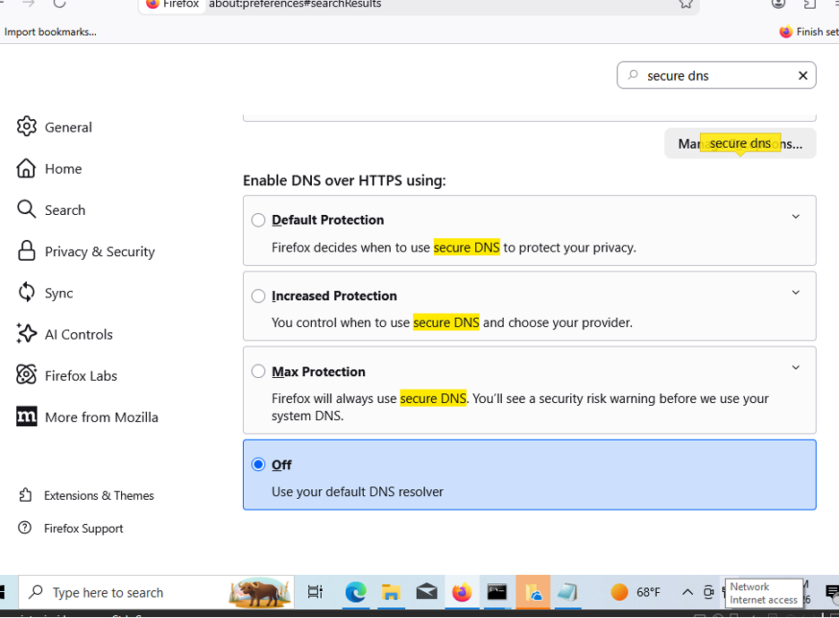
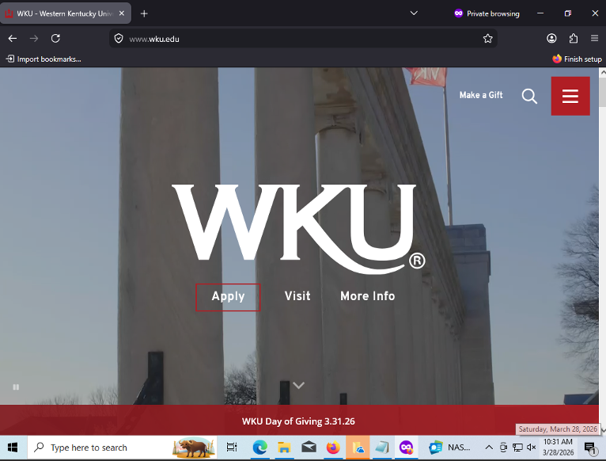
03
Part 3 · ARP Between Two Windows VMs
I ran two Windows 10 instances (original + clone). On each I collected
ipconfig /all and arp -a, cleared the default gateway for the
exercise, then rebuilt neighbor learning by pinging the peer.
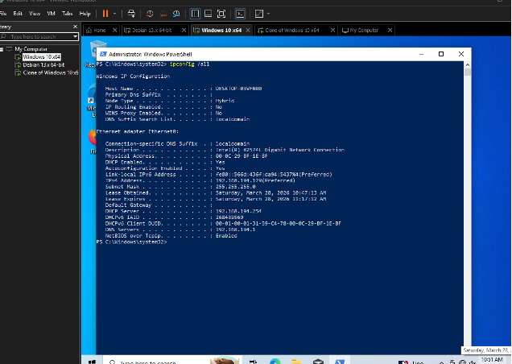
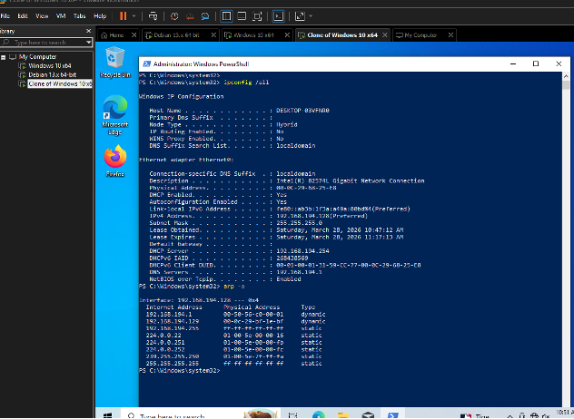
ipconfig /all and
arp -a.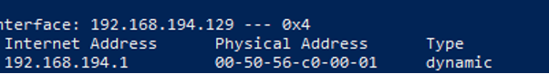
I deleted a cache entry, pinged the victim VM (timeouts were expected with the gateway gone), confirmed a dynamic peer entry appeared, then cleared the table again after adding a static mapping for the exercise.
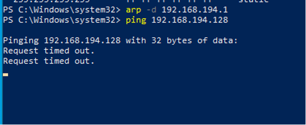
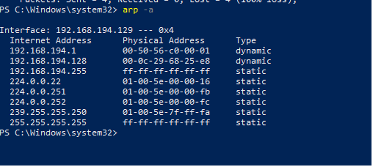
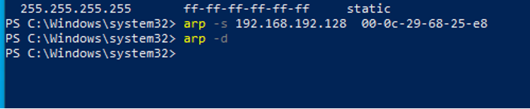
arp -s, then flush with
arp -d.04
Part 4 · MAC Address Spoofing
I installed Technitium MAC Address Changer (TMAC) on the Windows 10 guest and set a Netgear
OUI. The 2C-30-33 prefix associates with NETGEAR networking gear; using
02 as the first octet is a common lab pattern for a locally administered
address that no longer matches the NIC’s burned-in MAC.
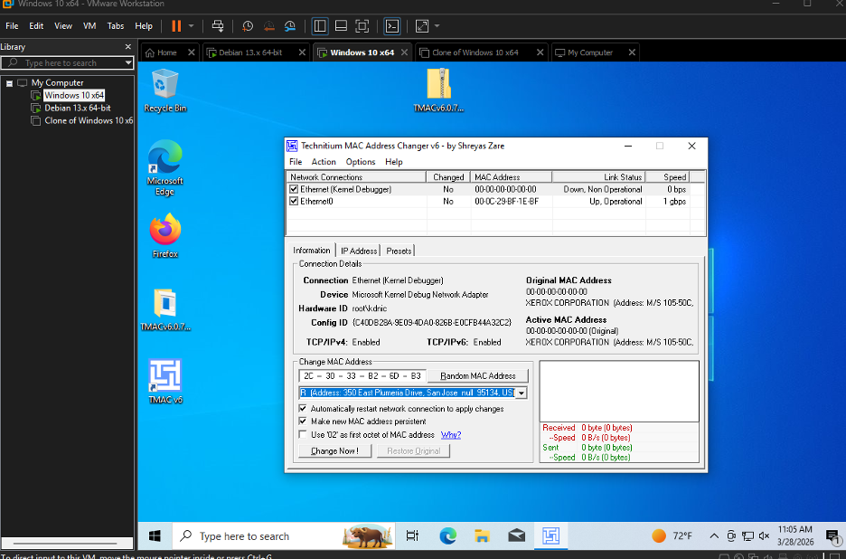
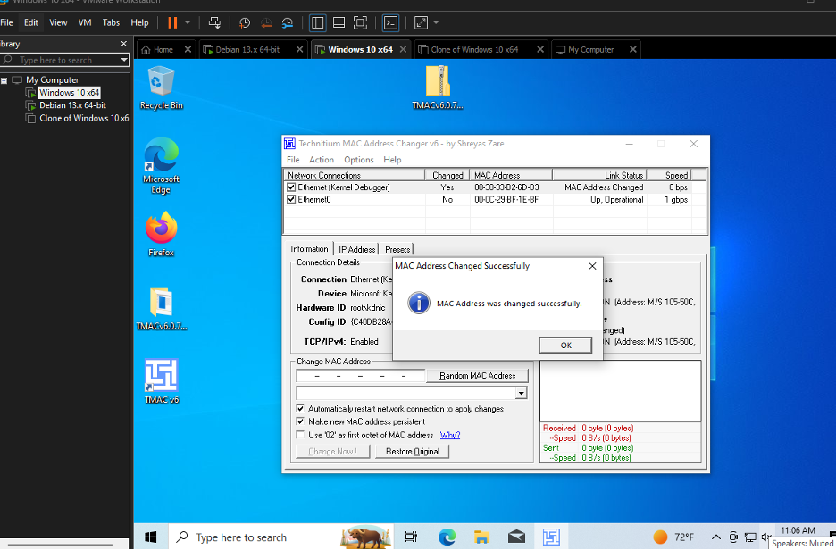
Spoofing was trivial in the VM—which is the point of the lab: a threat actor can present a MAC that looks like trusted vendor hardware, including addresses that might sit on a whitelist, unless the network uses stronger controls than MAC alone.